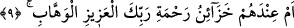

Allah’ın zikrinin/uyarısının kadîm olduğu hususunda ise herhangi bir kapalılık yoktur.
Çünkü kadîm olmayan bir zikrin öncesinde unutma sözkonusudur. Hâlbuki Allah Teâlâ
böyle bir şeyden münezzehtir.
“Hayır!” onlar benim “azâbımı henüz tatmadılar.”
(__WORD__) “henüz” lafzında, Mekkelilerin ilâhî azâbı tadmak üzere olduklarına dâir bir
delâlet vardır. Çünkü bu edat, beklenti anlamı taşır. Mânâ şöyledir: Onlar benim
azâbımı henüz tadmadılar, işin gerçek veçhesi bunu taddıkları zaman açık seçik ortaya
çıkacaktır.
Bu ifâde müşrikleri şöyle tehdîd etmektedir: Benim azâbımı yakında tadacaklar ve
azab, tasdikin fayda vermeyeceği bir zamanda kendilerini bu ‘uyarı’yı tasdik etmeğe
zorlayacaktır.
Burada Mekkeli nankörlerin kovulma ve uzaklaşma azâbı ile mahrum kalma ateşine
garkolmuş halde bulunmalarına rağmen, hislerinin galebe etmesi yüzünden ‘gizlenen
herşeyin ortaya döküldüğü gün’ (et-Târık 86/9) gelip çatıncaya kadar bu azâbı
tadmaktan epeyce uzakta olduklarına da işâret edilmektedir. O gün gelip çattığında ise
gizlenenler sûretlere galebe çalacak; basîretler (kalp gözleri) de basarlara (kafa
gözlerine) galip gelecek. İşte o gün bunlara ‘azâbı tadın bakalım!’ denecek. Demek
isteniyor ki, size zaten azap ediliyordu, fakat siz bunun farkında değildiniz,
tadamıyordunuz!
Buna göre ifâde şu anlama gelir: Şayet bunlar benim azâbımı tadmış ve ne kadar elem
verici olduğunu görmüş olsalardı, Kur’ân’ı inkâr etmeye teşebbüs edemezlerdi.
Peygamber
Efendimiz’in
(s.a.)
“İnsanlar
uyumaktadır,
öldükleri
zaman
uyanacaklar.”[1] şeklindeki hadisi de bu mânâya delâlet eder.
9. Yoksa azîz ve lütufkâr olan Rabbinin rahmet hazineleri onların yanında mıdır!
(__WORD__) lafzı; bel (__WORD__) ve hemze (__WORD__) mânâsında olup em-i munkatıadır. (__WORD__) kelimesi,
“hazine” anlamındaki (__WORD__)’nin çoğuludur. Yâni Rabbinin rahmet hazineleri onların
yanında mı ki, bu hazinelerden dilediklerine verip dilediklerini mahrum bırakmak ve bu
hazinelere kendi kafalarına göre hükmederek peygamberlik makamını, kendi ileri
gelenlerine lâyık görmek sûretiyle diledikleri gibi tasarrufta bulunuyorlar?
Mânâsı şudur: Peygamberlik, Allah Teâlâ’nın, kullarından dilediğine ihsân ettiği bir
atıyyedir, bir vergidir. Onu engelleyecek hiçbir şey de yoktur. Çünkü O hem Azîz’dir,
yâni hiçbir şekilde mağlup edilemeyen bir gâlibdir; hem de dilediği herşeyi hibe etme
güç ve yetkisi bulunan bir Vehhâb’dır.
Mâdem ki lâyık olanların hâlinden haberdârsın